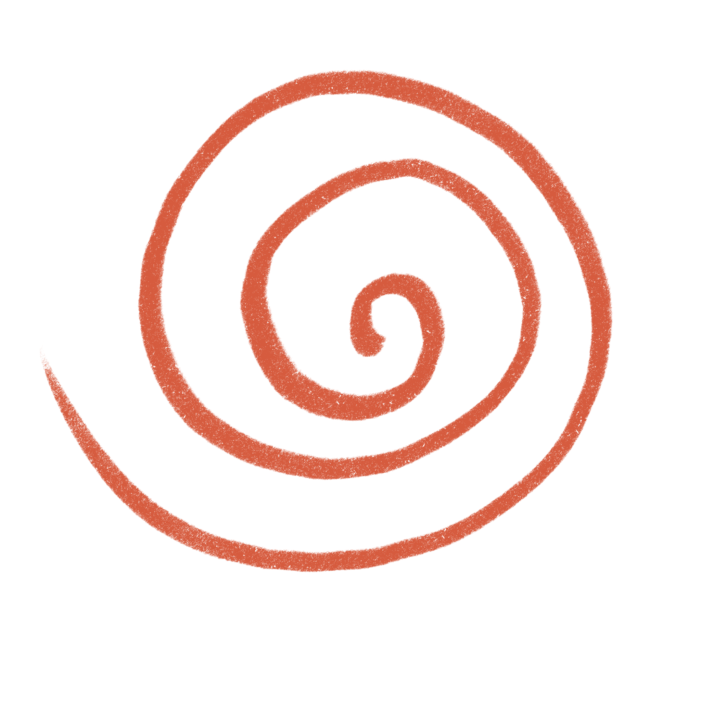

About me
Hello!
Nice to meet you.
I'm a Computer Engineering student at KMITL who found UX/UI through building software — and realized great products need more than functional code. They need experiences that make sense to people.
I'm currently looking for an internship where I can keep growing as a UX/UI designer — testing with real users, and shipping work that holds up outside of Figma.
My approach
As a designer, I lead with empathy and usability — turning complex requirements into interfaces that make sense. My engineering background isn't separate from that: it's what lets me design with feasibility built in, so what ships doesn't lose what made it work in the first place.
Education
King Mongkut's Institute of Technology Ladkrabang
Bachelor of Engineering (B.Eng.) in Computer Engineering
Skills
UX/UI Design
Frontend Development
Design Tools
Other Tools
Visual & Multimedia
Soft Skills
Certificates
Basic Web Development
42 Bangkok · 2024Built responsive web projects with HTML, CSS, and JavaScript through 42's peer-to-peer, self-learning curriculum.
Introduction to Python
42 Bangkok · 2025Strengthened Python fundamentals and algorithmic thinking through self-directed learning and peer code review.
In my free time
I've loved drawing since I was young
It sharpens my eye for detail and composition, and shapes how I see visual design.
 doodle no.1
doodle no.1
 doodle no.2
doodle no.2
I enjoy editing videos
It taught me pacing and storytelling — skills I carry into how I craft user experiences.
Just started exploring Blender
A new creative outlet I'm still getting the hang of. Still early days — one render in, many more to come.

first Blender renderOpen for Internship Opportunities
I'm ready to learn, contribute, and grow with your team.
Designed & coded by Sasiyakorn